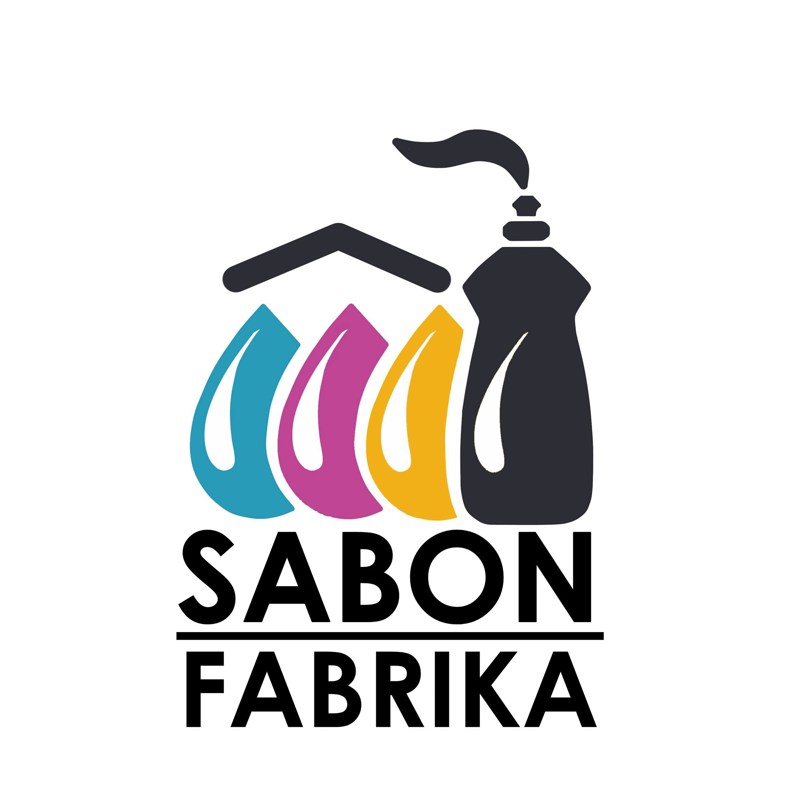
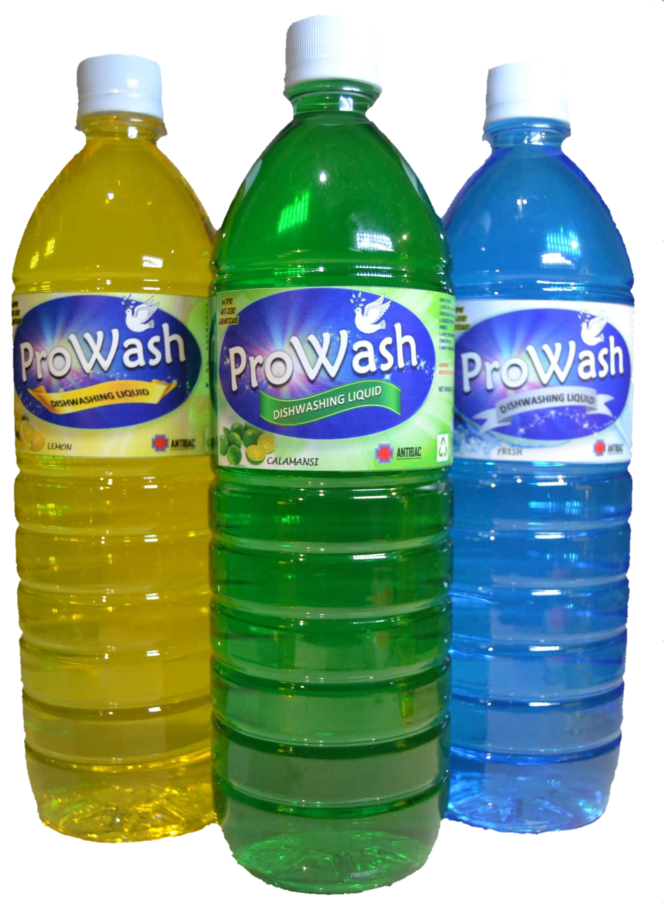

Sabon Fabrika
Best Sabon in Town!
Sabon Fabrika has the most budget friendly and highest quality
cleaning products in all of Pangasinan! With a guaranteed standard
for cleanliness, rest assured that our products will leave you
more than just a clean smile on your face! We offer our products
to anywhere within the Northern Luzon area within two to four
business days.

Start your business by simply choosing our high-quality products. We
offer and refill household cleaning materials such as: Dishwashing
Liquid, Fabric Conditioner, Liquid Detergent, Hand Soap, Liquid
Bleach, Car/Motor Shampoo, and Laundry Powder.
Place your franchise orders now!
With our 0% franchise fee and assured high qulity products, Sabon
Fabria is the perfect business to start for entrepreneurs
anywhere.